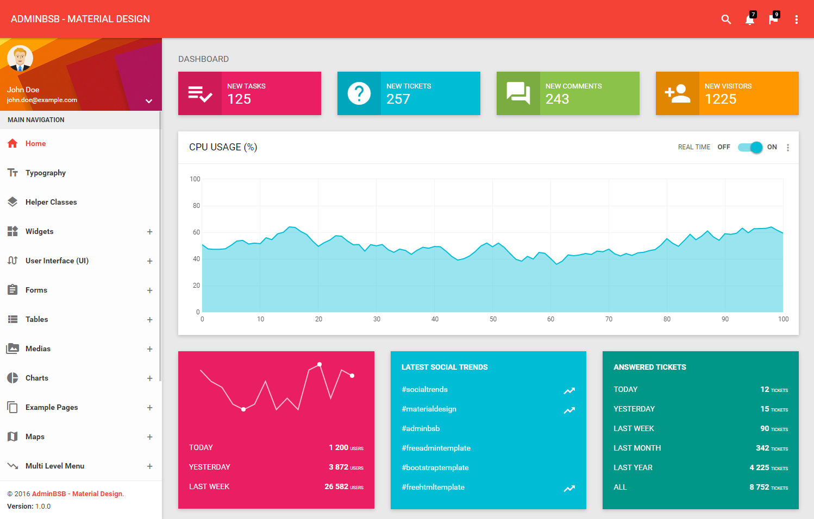

Good practice in UI
The (UI), in the modern outline field of human– PC cooperation, is where communications amongst people and machines happen. The objective of this communication is to permit compelling operation and control of the machine from the human end, while the machine at the same time encourages back data that guides the administrators, basic leadership process. Cases of this wide idea of UIs incorporate the intelligent parts of PC working frameworks, hand instruments, substantial apparatus administrator controls, and process controls. The outline contemplations material while making UIs are identified with or include such teaches as ergonomics and brain science.
We used material Design, because it provides the most consistent and pleasing design available. It is much more easy to implement and very easy to for users to navigate with.
You can see the example of material design below.
